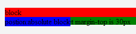
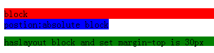
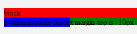
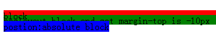
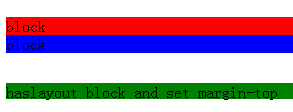
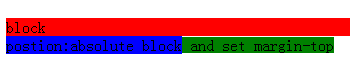

RX8018: IE6 IE7 IE8(Q) 中可被渲染的绝对和固定定位元素将消除其后紧邻它的触发了 hasLayout 特性的块级元素的 margin-top
标准参考
无
问题描述
当某块级元素设置了 margin-top ，并且之前存在着可被渲染的绝对定位元素时，其 margin-top 在 IE6 IE7 IE8(Q) 会失效。
造成的影响
导致元素间基于 margin-top 产生的间隙不被渲染。
受影响的浏览器
| IE6 IE7 IE8(Q) |
|---|
问题分析
本文中所阐述的问题比较复杂，其触发条件可分为以下几个：
- 元素被设置为块元素1（display:block/list-item/table）；
- 该元素触发了 IE 的 hasLayout 特性2；
- 该节点之前存在一个可被渲染的绝对定或固定定位元素3；
- 该元素设置了不等于 0 的 margin-top 值（正负 margin-top 值均可）。
【注1】：IE6 IE7 IE8(Q) 并不支持 display: table 特性值设置。具体可参考：RM8001: 各浏览器对 'display' 特性值的支持程度不同
【注2】：有关 IE hasLayout 特性详细说明，可以参看 MSDN 上的官方文档： http://msdn.microsoft.com/en-us/library/ms533776(VS.85).aspx
【注3】：由于 IE6 IE7(Q) IE8(Q) 不支持固定定位 'position:fixed' 特性值设置，因此 IE6 中仅有绝对定位元素可以触发本问题 。具体可参考：RM8013: IE6 IE7(Q) IE8(Q) 不支持固定定位（position:fixed）
分析以下代码：
<p>A1.1</p> <div style="background:red;">block</div> <div style="background:blue; position:absolute;">postion:absolute block</div> <span style="background:green; margin-top:30px; display:block; height:16px;">haslayout block and set margin-top is 30px</span> <p>A1.2</p> <div style="background:red;">block</div> <div style="background:blue; position:absolute;">postion:absolute block</div> <span style="background:green; margin-top:-10px; display:block; height:16px;">haslayout block and set margin-top is -10px</span> <p>A2</p> <div style="background:red;">block</div> <div style="background:blue; position:relative;">postion:relative block</div> <span style="background:green; margin-top:30px; display:block; height:16px;">haslayout block and set margin-top</span> <p>A3</p> <div style="background:red;">block</div> <div style="background:blue;">block</div> <span style="background:green; margin-top:30px; display:block; height:16px;">haslayout block and set margin-top</span> <p>A4</p> <div style="background:red;">block</div> <div style="background:blue; position:absolute;">postion:absolute block</div> <span style="background:green; margin-top:30px; height:16px;">haslayout inline-block and set margin-top</span> <p>A5</p> <div style="background:red;">block</div> <div style="background:blue; position:absolute;">postion:absolute block</div> <span style="background:green; margin-top:30px; display:block;">block and set margin-top</span>
上面五组代码中，第一组中俩项均符合问题触发条件，唯一不同的是 margin-top 值分别被 30px 与 -10px。
这段代码在不同浏览器中运行结果如下：
| IE6 IE7 IE8(Q) | IE8(S) IE9 Firefox Safari Chrome Opera | |
|---|---|---|
| A1.1 |  |  |
| A1.2 |  |  |
| A2 |  |
|
| A3 |  | |
| A4 |  | |
| A5 |  |
|
从上表中可以明确看出，A1.1 与 A1.2 组内，块级元素一旦触发了 IE 的hasLayout 特性，并且存在 margin 设置，只要处于以被渲染出的绝对定位元素1之下，其 margin-top 不被渲染出来。
A2 至 A5 组，将以上限定条件打破任意打破一项后，margin-top 均可被正常渲染。由此可见，本问题是由于低版本 IE 的渲染引擎实现缺陷造成的，为浏览器 bug 范畴。
【注】：对于 'position:fixed' 设置导致仅 IE7 出现间隙消失的问题，本文测试用里中不再给出特定说明，具体可看其后的测试用例页面。
解决方案
针对这类低版本 IE 浏览器的 bug，请尽量避免满足其所有触发条件。如本例中所需间隙可以采用其它设置元素的 margin-bottom或问题元素的 padding-top 等方式来弥补。
参见
知识库
相关问题
测试环境
| 操作系统版本: | Windows 7 Ultimate build 7600 |
|---|---|
| 浏览器版本: |
IE6 IE7 IE8 IE9 Firefox 5.0 Chrome 14.0.825.0 dev Safari 5.0.5 Opera 11.50 |
| 测试页面: | absolute_remove_margin_top.html position_fixed_remove_margin_top.html |
| 本文更新时间: | 2011-7-21 |
关键字
block-level display block list-item margin-top hasLayout zoom